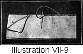
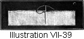
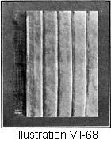
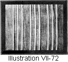
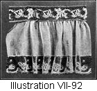

1917—American Dressmaking Step by Step
by Mme. Lydia Trattles Coates
Chapter 7—Construction Work
Lesson 55—Basting Garments Together
Correct basting is essential in good garment making and considerable time is saved by careful basting. Baste all fitting, alteration, and irregular lines. Straight edges, and those of uniform length or width, upon which there is to be no fitting or alteration, can be sewed together without basting.
Cotton thread may be used for basting on all materials except silk, satin or velvet. The latter should be basted with silk thread, so that when the basting is removed it will not leave thread marks.
Use a little larger needle than for ordinary hand sewing.
Before basting, carefully match all notches, and pin the garment together.
When basting a straight edge and a bias edge together baste whenever possible with the bias edge toward you.
Baste a short distance from the sewing line in order that the basting stitches will not be sewed into the garment when the final work is done.
To remove bastings, clip the basting thread every few inches and always draw from the knot end.
Rules for Garment Basting
Underarm seams—Baste from the waist-line upward.
Shoulder seams—Baste from the neck toward the arm-scye.
Side-front seams—Baste from the bust-line upward to the shoulder and downward to the waist-line.
Side-back seams—Baste from the shoulder-blade line upward to the shoulder and downward to the waist-line.
Darts—Baste from the point of the dart to the broad portion of the dart.
Sleeves—Baste from the bottom of the sleeve upward.
Skirts—Baste from the waist-line downward, except on tight-fitting skirts—then baste from the hip-line upward and the hip-line downward.
Plackets—Baste from the bottom of the placket upward.
Lesson 56—The Plain Seam
A Plain Seam is the basis of many other seams. It is never a finished seam unless the edges are self finished with selvedge, overcast (Lesson 53), bound as an open seam (Lesson 65), or as a closed seam (Lesson 66).
To Make the Plain Seam (Illustration VII-1)
Baste the two edges of the material together and sew along the marked seam line, or if no width seam is designated, stitch 3/8 of an inch from the outer edge of the material. If material is inclined to fray, allow 1/2-inch.
Lesson 57—The Turned-In Seam
The turned-in seam is used when a finished closed seam is required, and the line of the garment such that the French seam is not practical, as on underarm and skirt seams.
To Make the Turned-in Seam (Illustration VII-2)
- Make a plain seam on the under side of the garment.
- Turn both edges of the seam toward each other, turning each side exactly the same amount.
- Baste the edges together.
- Stitch the edges together or finish by top stitching (Lesson 53).
Lesson 58—The Fell Seam (Illustration VII-3)
The Fell Seam is especially suitable for seams on underwear made of medium weight material. The Fell Seam is not used on very thin material, as the edges of the seam will show through the goods.
To Make the Fell Seam
- Make a plain seam on the under, or wrong side of the material.
- Trim to a narrow edge on one side of the seam, leaving the other side 3/8 of an inch wide.
- Make a narrow underturning on the retrimmed or 3/8-inch edge, making the turning toward the narrow trimmed edge.
- Lay the work flat on the table, and crease or press the wide turned edge over the trimmed edge.
- Baste down very carefully.
- Finish with any of the hemming stitches. (Lesson 48, 49, or 50.)
Lesson 59—The French Fell Seam (Illustration VII-4)
To Make the French Fell Seam
- Make a plain seam on the under side of the material, either 3/8 of an inch wide or trim to 3/8 of an inch width.
- Trim one edge of the seam to 1/8-inch.
- Make a 1/8-inch fold on the edge of the untrimmed or 3/8 of an inch width portion of the seam, folding toward the trimmed edge.
- Bring the edge of the fold of the wide portion of the seam to the seam line.
- Finish with any of the hemming stitches. (Lesson 48, 49, or 50.)
The French Fell Seam when finished is a standing seam, and, like the French seam, shows no stitching on the right side of the garment. It is the daintiest of all the many seams, especially when the plain seam is made by hand with a running stitch.
Lesson 60—The French Seam (Illustration VII-5)
The French Seam is for thin materials and dainty garments. It should be used on lines that can be easily turned. Often, however, the French seam is used where the Turned-in Seam should have been used and a most undesirable effect is produced.
To Make the French Seam
- Baste the garment right side out, basting on the exact seam line.
- Stitch the seam 1/4 of an inch outside of the Seam Line.
- Trim all edges of the seam down to 1/8 of an inch.
- Remove the bastings.
- Press the seam together.
- Turn the seam to the under side of the garment and encase the raw trimmed edges by basting them inside of a seam 1/4 of an inch wide. This basting must be wide enough to cover the edges of the first seam so that no raw edges or threads show on the right side of the garment.
If a 1/8 of an inch finished French Seam is desired:
- Baste on the seam line.
- Stitch 1/8 of an inch outside of the seam line.
- Trim both edges of the seam to 1/16 of an inch width.
- Press the seam together.
- Turn the seam to the under side and encase in a 1/8 of an inch seam.
Lesson 61—The Flat French Seam (Illustration VII-6)
Some times the loose edge of the French Seam is not desired, especially on underwear and long seams. In this instance the French Seam is made as usual, then pressed and basted flat. It is either machine stitched or hemmed by hand.
Lesson 62—The French Fold Seam (Illustration VII-7)
This seam is used in all cases where the seam lines are to be covered as much as possible, as in chiffon, lace, and other delicate fabrics.
To Make the French Fold Seam
- Baste the garment right side out, basting exactly on the seam line.
- Stitch the seam 1/8 of an inch outside of the seam line.
- Trim all the edges of the seam to 1/16 of an inch width.
- Remove the bastings, and press the seam to one side.
- Turn the seam to the underside of the garment. Make a fold covering the raw edges of the seam and stitch the fold exactly on the seam line. This gives a fold instead of a seam at the edge of the casing.
Lesson 63—The Roll Seam (Illustration VII-8)
The Roll Seam is used when the edges are to be joined and the material ravels or draws and an exceptionally narrow joining is required.
To Make the Roll Seam
- Trim both edges of the material evenly.
- Hold the edges together. Roll together the top thread of both edges two or three times.
- Begin from the back of the work and whip the roll very closely together, being careful that the stitches come entirely under the roll, not through the roll. Draw the thread tightly. This seam will leave a small roll or welt.
Lesson 64—The Whip Seam (Illustration VII-9)
The Whip Seam is used on firm material when a narrow and inconspicuous seam is desired, as for sheets, pillow-slips, etc. When the material frays or pulls out the Roll Seam must be used
To Make the Whip Seam
- Baste the two edges evenly together.
- Place the needle pointing straight toward you from the back and top of the work. Follow all of the instructions for Top Stitching. (Lesson 53.)
- Draw the thread through to the side nearest you, being careful not to pull the thread too tightly or it will form a welt which will not press out flat.
- Continue making these stitches just as close together as possible.
- When finished press open the seam.
 Lesson 65—The Open Bound Seam (Illustration VII-10)
Lesson 65—The Open Bound Seam (Illustration VII-10)

To Make the Open Bound Seam
- Make a plain seam on the under side of the material.
- Press the seam open.
- Trim the edges of the seam evenly.
- Use seam binding of a width that will fold easily over the edges. The usual width is 3/8 of an inch, but on heavy materials a wider binding should be used. Fold this binding either in the center or a little to one side of the center, whichever method is preferred, and press the crease with a warm iron.
- Slip the edge of the seam between the folds of the binding, so that the tape entirely covers the edge of the seam. Stitch, making one row of stitches catch the edges of the binding on both sides of the seam. In some instances it is well to put the binding on with a running stitch.
Lesson 66—The Closed Bound Seam (Illustration VII-11)
To Make the Closed Bound Seam
- Make a plain seam on the underside of the material.
- Press the seam to one side.
- Trim the edges of the seam evenly.
- Follow step 4 in preceding lesson.
- Slip both edges of the seam between the folds of the binding. Machine stitch binding or finish with running stitch. (Lesson 43.)
Lesson 67—The Flat Bound Seam (Illustration VII-12)
The Flat Bound Seam is one of the very best methods of binding a seam where the seam line is to be covered.
To Make the Flat Bound Seam
- Make a plain seam on the under side of the material.
- Press the seam open.
- Make a narrow overturning on each edge of the seam and baste.
- Use a strip of seam binding and baste each edge of the binding to each edge of the seam turning.
- Stitch through the seam and binding, but not through to the right side of the garment.
Lesson 68—The Stayed Seam (Illustration VII-13)
On most materials a bias seam, or even a slightly bias seam, should be stayed. This does not mean the old-fashioned way of taking a wide piece of tape and stitching it in with the seam leaving a very ugly finish. A very narrow cotton or linen tape answers the same purpose.
To Make the Stayed Seam
- Baste the bias seam.
- Baste the tape directly over the seam line.
- When the seam is stitched the tape is stitched with it. This keeps the seam from stretching.
Lesson 69—To Stay and Bind an Open Seam (Illustration VII-14)
- Baste the seam.
- Baste the tape at the seam line on each side of the seam.
- Stitch the seam and the tape with one stitching.
- Press the seam open.
- Trim the edges of the seam evenly, and narrow enough so the edges of the tape can be folded over the edges of the seam.
- Stitch each edge of the seam separately. This means three rows of stitching to make the seam, one when the seam and the two rows of tape are stitched together and one on each side of the open seam.
This method is used only on wide seams and heavy materials. The binding must be very light in weight otherwise the turnings can not be made neatly.
Lesson 70—To Stay and Bind a Closed Seam (Illustration VII-15)
- Baste the seam.
- Stitch one edge of the binding to the seam while stitching.
- Turn the other edge of the binding over the edge of the seam and stitch near the edge of the binding. This method both stays and binds the seam.
Lesson 71—The Single Stitched Seam (Illustration VII-16)
To Make the Single Stitched Plain Seam
- Make a plain seam on the under side of the garment.
- Press both edges of the seam to one side.
- Turn the garment to the right side and stitch a short distance from the seam line, stitching through the material and the seam.
This seam can be used on practically any style of garment.
Lesson 72—The Double Stitched Seam (Illustration VII-17)
To Make the Double Stitched Plain Seam
- Make a plain seam on the under side of the garment.
- Press the seam open.
- Turn the garment to the right side and stitch an equal distance on each side of the seam line.
This seam is appropriate for tailored effects.
Lesson 73—The Broad Stitched Seam (Illustration VII-18)
To Make the Broad Stitched Seam
- Make a plain seam on the under side of the garment.
- Press the seam open.
- Turn the garment to the right side, and stitch close to, and on each side of the seam line. Then stitch on a line which will catch each of the edges of the seam on the underside. This gives four rows of stitching on the right side of the garment. This seam is very useful for heavy materials and wide seams.
Lesson 74—The Strap Seam (Illustration VII-19)
To Make the Strap Seam
- Make a plain seam on the right side of the garment.
- Press the seam open.
- Baste a strip of the same material, or of a contrasting material, on which both edges have been turned under forming a strap wide enough to cover the raw edges of the seam.
- Stitch both sides of the strap.
This seam is used for novel effects. If a more elaborate idea is to be carried out ribbon or braid may be substituted.
Lesson 75—The Welt Seam (Illustration VII-20)
The Welt Seam is used only on materials heavy enough so that the edge of the seam does not show through the fold. It is entirely unsuited to thin goods.
To Make the Welt Seam
- Make a plain seam, usually on the right side of the garment.
- Trim a narrow edge one side of the seam, leaving the other side the desired width of the welt, allowing for the turning.
- Make a narrow underturning on the wide edge.
- Lay the work flat on the table and crease and press the wide turned edge of the seam over the trimmed or narrow edge.
- Baste carefully.
- Stitch near the edge of the fold.
The welt of the seam can be made on either the right or the under side of the garment. If the welt is to appear on the right side, baste the garment with the seams on the right side. If the welt is to appear on the under side baste the plain seam foundation on the under side. The Welt Seam is always machine stitched, never hand sewed. It is a Fell Seam when it is hand sewed.
Lesson 76—The Single Stitched French Welt Seam
To Make the French Welt Seam with but One Row of Stitching
- Turn one edge of the seam over.
- Turn the other edge of the seam under.
- Trim closely the edge which is turned over.
- The raw edge of the turning of the portion which is turned under should be basted on the narrow trimmed edge which is turned over.
- One row of stitching taken on the extreme edge of these turnings, which have been placed together, will make the seam. When correctly made, there will be no raw edges appearing.
Another Way to Make the Seam (Illustration VII-21)
- Leave the edges untrimmed, and look the portion which is turned under on to the portion which is turned over.
- Stitch in the center of the turned edges of the fold. This leaves a small tuck on both sides. It is also called the Lock Seam.
Lesson 77—The Double Stitched French Welt Seam (Illustration VII-22)
The Double Stitched French Welt Seam is used in joining such portions of a garment as a yoke and body part, or a skirt foundation and the lower section of the skirt.
To Make the Double Stitched French Welt Seam
- Turn one edge of the seam over onto the right side.
- Turn the other edge under toward the wrong side, turning under the edge which is to come on top. In joining a yoke to a garment, the body portion is turned over, and the yoke portion is turned under.
- Baste the edge which is turned under onto the turned over edge.
- Stitch the edge of each turning.
Lesson 78—The Tailored Lap Seam (Illustration VII-23)
To Make the Tailored Lap Seam
- Make a plain seam on the under side of the garment.
- Press this seam to one side.
- On the right side of the garment, make a 1/8 inch fold of the material, and baste the fold so it entirely covers the seam line.
- Stitch the fold down, stitching exactly on the seam line.
Lesson 79—The Overlap Seam (Illustration VII-24)
To Make the Overlap Seam
- Make a plain seam on the right side of the garment.
- Trim this seam down as narrow as is practical.
- Make a fold of the material, and baste the fold so that it entirely covers the seam.
- Stitch the fold down, being careful to stitch beyond the trimmed edges of the under seam.
This gives a fold of any desired width on the right side, and a very tiny fold on the under side.
The overlap seam is especially useful for the hip-line of tailored skirts.
Lesson 80—The Fold Lap Seam (Illustration VII-25)
A Lap Seam is used in many places on a garment. It is very frequently used for the front and back of skirts.
To Make the Fold Lap Seam
- Fold under the portion of the seam that is to be lapped over, and baste down both edges of the fold.
- Lap the folded edge over the edge of the flat under portion of the seam.
- Stitch any desired width from the edge of the fold.
- Bind the edges of the under portion of the seams together.
Lesson 81—The Plain Slot Seam (Illustration VII-26)
To Make the Plain Slot Seam
- Baste a plain seam about 1 1/8 inch wide on the under side.
- Press the seam open.
- Cut a stay of the same material as the garment and one inch wider than the slot seam is to be when finished. For instance, if the fold on each side of the seam is to be one inch wide, the completed seam is two inches wide. A three-inch stay is then needed. It is better to cut one edge of the stay with a selvedge edge, then bind the other edge. When this is not possible bind both edges. The stay must always be cut on the straight of the material. Baste the stay over the open seam on the under side.
- Stitch back from the basted seam line on each side the width the slot seam is desired.
- Remove the seam basting thus releasing the folds.
Lesson 82—The Stayed Slot Seam (Illustration VII-27)
To Make the Stayed Slot Seam
- Cut a stay as taught in Step 3, Lesson 81.
- Baste a marking thread down the exact center of the stay.
- Fold under each edge of the seam and baste from the edge of the fold the width which the slot is desired.
- Baste both folds onto the stay, making the edges meet at the center of the stay on the marked line.
- Stitch on the basted width line.
Lesson 83—The Overslot Seam (Illustration VII-28)
To Make the Overslot Seam
- Make a plain seam on the right side of the garment and press the seam open.
- Make and stitch a plait of the material on each side of the seam having the folded edge of the plaits meet at the seam line.
- Stitch the fold-edge of each plait. This gives four rows of visible stitching.
Lesson 84—The False Slot Seam (Illustration VII-29)
To Make the False Slot Seam
- Make a plait at least two inches from the edge of the material. Stitch the plait just the width which you wish one-half of the slot seam to be.
- Press the plait toward the edge of the material.
- Make an under fold on the opposite edge of the seam, basting it the exact width of the plait.
- Baste the folded edge so that it meets the plait on the opposite seam edge.
- Stitch from the edge of the fold the same distance from the center which the plait is stitched.
This requires neither a plain seam nor a stay and is a very satisfactory seam when necessary to piece a garment on a center-line.
Lesson 85—Flat Uniform Hem (Illustration VII-30)
A uniform hem should be of uniform width and great care should be taken in turning it. If working on a straight edge, the following method is good:
- Draw a thread on the line of the first turning.
- Baste this first turning wide enough so that none of the raw edges will work out from under it. Do not make it carelessly, as the line of stitching, which shows on the right side of the garment, will follow this turning.
- Then, from this narrow turned edge, measure the exact depth which the finished hem is to be and draw another thread on this line for the second turning. Creasing under on this line completes the turning of the hem.
- Finish with hemming stitch (Lesson 49 or 50) or machine stitch.
If working on an irregular line so a thread can not be drawn:
- After making the first turning, measure with a tape measure or gage from the first turning to the depth the finished hem is desired and then make the second turning.
- A gage (Illustration VII-31) is made by taking a straight piece of cardboard and cutting a notch at the exact width the finished hem is to be.
Lesson 86—The Pin Hem (Illustration VII-32)
The Pin Hem is an extremely narrow, flat, uniform hem. While it should be very narrow, it must not be rolled, but the edges should be kept flat.
To Make the Pin Hem
Make a narrow turning of just two or three threads of the material, and make the second turning just wide enough to cover these threads. It is usually finished with a Hemming Stitch (Lesson 41 or Lesson 50), or the Invisible Slip Stitch (Lesson 51).
Lesson 87—The Damask Hem (Illustration VII-33) (Sometimes called The Napery Hem)
A Damask Hem is especially suitable for household linens.
To Make the Damask Hem
- Baste a flat uniform hem the width desired. (Lesson 85.)
- Hold the basted hem downward and toward you. Fold back the material at the top of the hem. This leaves the hem toward you.
- Fasten the thread under the hem, and bring it out through the top of the hem very close to the edge.
- Use the stitch known as the overcasting, overhanding, or whip stitch. (Lesson 55.) Place the needle straight through the material at the very top of the turning of the hem. Point the needle straight toward you. Do not slant it. Make the stitches very small and very close together.
- When finished, press with a warm iron on both sides and the stitches can hardly be seen. If any threads are drawn to straighten the edges, these threads can be used for hemming, and the effect is still better.
Lesson 88—The French Hem or the Flannel Hem (Illustrations VII-34 and 35)
35)

The French or Flannel Hem is a flat uniform hem made on the right side of the garment. On flannel garments such as Infants' Petticoats the hem is finished with the Catch Stitch (Lesson 54), the Feather Stitch (Lesson 246), or Briar Stitch (Lesson 247 or 248). Rip the seam of the hem and clip a short distance below the top of the hem line, and restitch this portion of the seam on the right side so that it will be covered by the hem.
Lesson 89—The Length Hem (Illustration VII-36)
The Length Hem differs from the uniform hem inasmuch as in hemming a skirt, or the lower edge of a sleeve, etc., the correct length of the portion of the garment to be hemmed is the first consideration.
To Make the Length Hem
- Mark the correct length either with basting threads or with colored chalk. (A.)
- Then crease upward on line marked, and baste 1/8-inch from edge.
- If the hem is deep, put in one or more rows of diagonal bastings to hold the hem flat. (Illustration VII-37.)
- Measure from the length line of the garment, the width the hem is desired. (B and C.)
- Allow 3/8-inch for the second turning, and trim off the remaining amount. (D.)
- Turn under 3/8-inch and baste carefully.
- Finish with the Invisible Slip Stitch (Lesson 51) or Machine Stitch.
Lesson 90—The Gathered Hem (Illustration VII-38)
It sometimes happens a circular garment has been cut too long, or, a ready-made garment is too long, and a gathered hem is preferred rather than to cut off the surplus length and apply a facing.
To Make the Gathered Hem
- Mark the desired length of the skirt. (A.)
- From the marked length line measure downward and mark the exact depth which the hem is to be. (B.)
- From the marked length line, measure upward depth of hem. (C.)
- Cut off all surplus material to within 3/8 of an inch of the width line of the hem.
- Make a row of shirrings on the width line. (B)
- Crease upward on length line (A) and baste up turning of hem.
- Draw the gathering thread until the fulness comes straight up from the length line of the skirt and baste a strip of tape over line B on the right side. Baste only through the tape and the hem and not through the skirt portion itself.
- Remove the bastings from the bottom of the skirt and machine stitch the tape to hold the fulness in place.
- Press the hem carefully, shrinking out all of the fulness possible and pressing the remaining fulness flat. This pressing should never be done after the bottom of the skirt has been finished, for it will leave marks and wrinkles where the extra fulness is pressed against the garment.
- Fold up so lines B and C meet and cut away any material which extends beyond the edge of the tape. Stitch the top edge of the tape to the garment or finish with invisible slip stitches. The tape will come a little beyond the depth line (C).
Lesson 91—The Roll Hem (Illustration VII-39)
The Roll Hem is used only on thin materials. It is used to the best advantage on edge work or when an edging or ruffle is to be put on. The roll must be made very small. It must be the shape of a roll and not flattened out, therefore it must be rolled very tightly. This is by far the daintiest of all hems.
To Make the Roll Hem
- Trim the edge of the material until no uneven or ragged edges appear, and no ravelings show.
- Hold the wrong side of the material toward you with the trimmed edge up.
- Begin at either the right or the left hand end.
- Hold the top of the material so that the thumbs catch the very top thread. Keep the other fingers on the opposite or right side close to the top of the work.
- With both thumbs roll the top thread over two or three times, rolling toward you. Do not try to roll with one thumb, as you can not roll so quickly, so tightly, or so straight as you can when yon use both thumbs.
- Whip the roll tight with whip stitches taken very close together, letting the stitch come under the roll and not through it. Roll only an inch or two at a time, whipping the hem as you roll. (Lesson 53.)
Lesson 92—To Hem Round Edges (Illustration VII-40)
A Round Edge is seamed with a very narrow hem, which should seldom be wider than 1/8 an inch. It is hemmed according to the previous rules for uniform hemming, except that the first turning is snipped every inch or two, so that the hem will lie perfectly flat. Always face round edges when a 1/8 inch hem will not make a satisfactory finish. If a wider hem is used, the work can not be kept flat and neat.
FACINGS
Lesson 93—To Cut Facings
The Straight Facing is a straight strip. It is used only an a straight edge, or a perfect bias edge, and is usually cut on the lengthwise of the material, altho it may be cut on the crosswise.
The Bias Facing is a strip of material cut on a perfect bias, obtained by putting two straight edges together, and cutting diagonally across. It is used on irregular lines and is joined on the straight lengthwise or straight crosswise thread according to the nap or the surface thread, having all seams run in the same direction. (Illustration VII-41.)
The Fitting Facing is a facing cut on the same grain as the material, and following exactly the line of the entire portion to be faced. It is used on all irregular lines, and on all curves except the arm-scye. (Illustrations VII-44 and 45.)
The Exceptional Facing is a bias strip put on by using two threaded needles at the same time. The stitches on the outside and the inside edges are taken alternately. In this way the inside edge of the facing is kept smooth and the fuller line of the outside edge is so adjusted that the facing will lie flat. (Illustrations VII-46 and 4 7.)
7.)
Lesson 94—To Apply Facings
Facings are either set on or sewed on to the edge of the garment. All facings but the Exceptional Facing can be handled in either of these ways.
The Exceptional Facing, on account of the curve of the edge which it finishes, is always a Set-on Facing.
Lesson 95—Sewed-on Facing (Illustration VII-42)
The Sewed-on Facing has one edge sewed to the edge of garment with a plain seam, and the other edge turned under and hemmed down.
To Make the Sewed-on Facing
- Study the line to be faced. If the line is a perfect straight or bias edge, cut the facing on the warp thread or the crosswise of the material. If the line is an irregular one, cut the facing on the perfect bias. The facing must be the exact width desired, with 3/8 of an inch allotted on one side for a turning, and 3/8 of an inch on the other side for a seam. Allow a lesser amount for a narrow facing.
- Place the right side of the facing to the right side of the garment with the edges together, and stitch a 3/8 of an inch seam.
- Turn the facing to the under side, and draw the seam back 1/16 of an inch from the edge of the garment and baste. In all underfacings the seam or edge of the facing is brought back a little but not more than 1/8 of an inch from the edge of the fold. In the making of overfacings on collars and revers, bring the edge of the facing to the edge of the garment.
- Turn under the unsewed edge of the facing 3/8 of an inch, and baste.
- Finish with any of the hemming stitches (Lesson 43, 49, or 50).
Lesson 96—Set-on Facing (Illustration VII-43)
To Make the Set-on Facing
- Cut the facing either straight, bias, or fitted, according to the line which is to be faced. The facing must be the exact width desired, with 3/8 of an inch allowed on each edge for turning. If the facing is to be very narrow, a smaller turning is allowed.
- Turn under the edges of the facing the amount allowed, and baste and press the turnings. This makes a finished strip.
- Turn under the edges of the garment and baste the turning. When facing an irregular line, it is sometimes necessary to clip the turning so the edges will spread sufficiently to keep the material from drawing.
- Baste outside edge of facing 1/8 of an inch from edge of garment.
- If the facing is wide, make one or two rows of diagonal bastings between the two edges of the facing to hold it flat.
- Baste the inside edge of the facing, and finish both edges with any of the ways of hemming, or machine stitch.
Lesson 97—The Fitted Facing (Illustrations VII-44 and 45)
The Fitted Facing is suitable for curves, points, and irregular lines.
To Make the Fitted Facing
- If possible, select a piece of the same material as the garment. Whether or not the same material is used, match the grain of the goods, and lay the edge of the garment right side downward on the right side of the uncut material, which is to be used for the facing.
- Baste the edge of the garment flat onto the facing material.
- Machine stitch the edge of the garment to the material, so the work will be firm.
- Cut the facing material the same shape as the edge of the garment to be faced.
- Clip the edge of each curve until the facing will lie smooth.
- Turn the facing to the underside, drawing the seam back and under about 1/16 of an inch from the edge of the garment.
- Baste 1/8 of an inch from the edge of the garment.
- An even distance from the bottom line, mark the exact width the facing is desired.
- Cut the facing 3/8 of an inch beyond this line.
- If the facing is wide, baste with two or three rows of diagonal basting stitches.
- Clip the edges and turn under the top edge of the facing. Baste with uneven basting stitches. (Illustration VII-45.)
- Finish with any of the hemming stitches (Lesson 48, 49, or 50), or machine stitch.
Lesson 98—The Exceptional Facing (Illustrations VII-46 and  47)
47)
The arm-scye is faced with what is generally termed the Exceptional Facing. To apply the Exceptional Facing to the arm-scye of a garment:
- Cut a bias strip about 5/8 of an inch wide.
- Turn under both edges 1/8 of an inch, baste, and press. This makes a finished strip 3/8 of an inch wide.
- Turn under the edges of the arm-scye 3/8 of an inch, clipping the turning until it will lie flat. Baste down carefully. (Illustration VII-46.)
- Thread two needles.
- Place the outer edge of the facing to within 1/16 of an inch of the edge of the arm-scye, and on this edge place one of the needles, taking up a few basting stitches.
- Then place the second needle on the inside edge of the facing, and baste alternately with each needle, at all times keeping the facing lying perfectly flat and smooth. (Illustration VII-47.)
- Machine stitch both edges, or finish with the Slant Stitch (Lesson 48).
When lace edging is used for trimming there is only the folded material through which to sew, not the thickness of both facing and material. When an embroidery ruffle is used, or a ruffle of any kind, baste it between the facing and the turned edge of the arm-scye of the garment.
Lesson 99—The Sewed-on Extension Facing (Illustration VII-48)
To Make the Sewed-on Extension Facing
- Cut the facing the exact length and twice the width the finished facing is desired, making an extra allowance on all edges for seam and turnings.
- Stitch the right side of the facing to the right side of the garment with a plain seam.
- Turn under the loose edge of the facing, turning toward the seam.
- Bring edge of turning to underside of garment, covering seam.
- Finish with hemming stitch (Lesson 48, 49, or 50) or the Invisible Slip Stitch (Lesson 51).
Lesson 100—The Set-on Extension Facing (Illustrations VII-49, 50, and 51)
To Make the Set-on Extension Facing
- Cut a strip of material the exact length and twice the width the finished extension facing is desired, allowing a turning on each edge.
- Baste under the margin allowance. (Illustration VII-49.)
- Fold the extension exactly through the center and baste, keeping all edges even. (Illustration VII-50.)
- Slip the edge of the portion to be faced between the folds of the extension and machine stitch on all four edges of the facing, or finish with the Invisible Slip Stitch (Lesson 51) or any of the hemming stitches (Lesson 48, 49, or 50).
Children's skirts may be lengthened with the sewed-on Extension Facing applied to the bottom of the skirt or the facing may be applied according to Lesson 99.
Lesson 101—To Cut the Piped Facing (Illustration VII-52)
Obtain a perfect bias edge by folding a straight crosswise and lengthwise line together. Cut on this line, then make allowances as follows:
- Allow 1/4 of an inch margin for finishing.
- Allow width of piping desired.
- Allow width of facing desired.
- Allow 1/4 of an inch for the finishing of the facing.
Lesson 102—To Apply the Piped Facing (Illustrations VII-53 and 54)
- Cut the facing as directed in the preceding lesson.
- Turn under the edge of the garment and baste.
- Turn under the facing on the width line of the piping and on the turning line of the facing and baste both edges. (Illustration VII-53.)
- Apply the facing as taught in detail in Lesson 94, allowing the width of the piping to extend beyond the edge of the garment.
- Machine stitch or finish by hand. (Illustration VII-54.)
Lesson 103—To Cut Bias Piping (Illustration VII-55)
- Fold the material which is intended to be used for piping on a perfect bias and baste along the edge of the fold.
- Decide the exact width of the piping and baste a line marking this width.
- Cut the piping 1/4 of an inch beyond the second row of bastings.
Lesson 104—To Cut Piping on the Straight of the Material
- Fold on a straight line and baste.
- Baste a line marking the desired width of piping.
- Cut the material 1/4 of an inch beyond the marked line.
Lesson 105—To Cut Bias Double Folds (Illustration VII-56)
- Mark a true bias.
- Measure twice the width of the fold desired for the piping plus 1/4 of an inch on each edge for turnings.
- Turn under the extra margin and baste the edges of the turnings together.
- Finish by machine or with Invisible Slip Stitches (Lesson 51 or 52).
Lesson 106—To Apply Piping (Illustrations VII-57 and 58)
Piping is applied as a piped facing (Lesson 102), or it may be applied between the seams of a garment as follows:
- Turn over the under edge of the seam line and baste.
- Turn under the upper edge of the seam line and baste.
- Baste the piping to the upper edge of the seam, the piping extending just the width allowed for in cutting. (Illustration VII-57.)
- Place the portion of the garment on which the piping has been basted over the under part of the seam which has been turned over, then baste and stitch. (Illustration VII-58.)
Lesson 107—To Make the Double Fold Piping (Illustration VII-59)
- Cut the material for the double fold. (Lesson 105.)
- Turn under and baste both edges of the fold 1/4 of an inch, and then baste the turned edges together. (Illustration VII-56.)
- Turn under the garment with a wide or narrow turning depending upon the effect desired. Where only one stitching is desired, only a narrow turning is made. Where a deeper turning is desired, and whether one or two rows of stitching be made, both the piping and the turning must be made wider.
- Baste the double fold piping over the turned edge of the garment and stitch or finish by hand. If the garment is finished by hand, the edges of the double folds should be stitched together before they are applied to the garment. (Illustration VII-59.)
Lesson 108—The Milliners' Band (Illustration VII-60)
To Make the Milliners' Band
- Cut a strip of material either on the straight or the bias, cutting it two and one-half times the width of the finished fold.
- Make a double fold the desired width of the finished fold.
- Fold over the remaining edge, which is one half the width of the double fold.
- Catch stitch (Lesson 54) or machine stitch the folds together.
Lesson 109—The Milliners' Fold (Illustration VII-61)
To Make the Milliners' Fold
- Cut a bias strip and fold under one-third of its width.
- Make a narrow underturning on the opposite edge, bringing over the edge of the turning to cover the raw edges of the fold.
- Finish with Invisible Slip Stitches (Lesson 51 or 52) or machine stitch.
Lesson 110—The Corded Piping (Illustration VII-62)
Draw cable cord or yarn through piping which has been made in any desired manner. Use cable cord for heavy materials. For thin materials, such as chiffons, voices, organdies, and Georgette crepe, use heavy yarn of the same color as the piping.
Lesson 111—The Tuck Cording (Illustration VII-63)
Make an ordinary tuck just wide enough for the cord, and after the tuck has been finished, draw the cord through.
If the material or line is such that the tuck can not be made first, insert the cord while making the tuck; put in the tuck with the Running Stitch (Lesson 43).
Lesson 112—To Cover a Cord (Illustration VII-64)
112—To Cover a Cord (Illustration VII-64)

- Sew a fine cord to the end of the cable cord which is to be covered. (A)
- Cut a bias strip wide enough to cover the cable cord, allowing for seams.
- Fold the bias strip wrong side out over the fine cord. (B)
- Tack this bias strip firmly to the joining of the fine cord and cable cord. (C)
- Stitch from the folded edge a sufficient distance to allow the cable cord to be drawn through.
- Then draw the facing right side out over the cable cord by pulling the fine cord and drawing the facing over the cable cord. (D)
TUCKS AND PLAITS
Lesson 113—General Instructions for Making Tucks and Plaits
A tuck is a fold of material stitched through both thicknesses of the fold.
A plait is a fold of material stitched through both thicknesses of the fold and through the material.
Tucks may be divided into three classes:
- The plain tuck.
- The pin tuck.
- The Crosswise or Nun tuck.
Plaits are usually divided into three divisions:
- Side plaits.
- Box plaits.
- Inverted plaits.
In fancy plaiting which is done by machine, one may have a great variety of plaits, such as:
- Knife plaits.
- Accordion plaits.
- Sunburst plaits, etc.
The manner of making tucks is usually divided into:
- Even tucks.
- Graduated tucks.
- Group tucks.
When there are tucks or plaits and the pattern plainly marks their width, the problem is easy to handle. It is simply a matter of matching perforations, basting the tucks or plaits and stitching them exactly on the line which is marked.
Where there are no perforations and one must allow for the tucks or plaits, care must be exercised that the length and width are correct, that they are the correct distance apart, and lie in the right direction.
Lesson 114—To Make a Gage to Mark Tucks or Plaits (Illustration VII-65)
114—To Make a Gage to Mark Tucks or Plaits (Illustration VII-65)

- Mark a piece of cardboard the exact width the finished tuck is to be.
- Then mark the width desired between the finished tuck and the next tuck.
Lesson 115—Even Tucks (Illustration VII-66)
Crease the tucks and stitch back from the crease the desired width of the tuck. Stitch through both thicknesses of the fold.
Lesson 116—Even Plaits (Illustrations VII-67 and 68)
Crease plait and stitch the desired width, stitching through both thicknesses of the fold and the material, or the plait may be basted and pressed flat without stitching. Plaits should usually be stayed by tacking occasionally to a tape on the under side.
Lesson 117—To Make Graduated Tucks or Plaits (Illustrations VII-69, 70, and 71)
Mark the depth or length of each tuck or plait on a gage, making the gage the length of the deepest or longest tuck or plait. (Illustration VII-65.) Proceed as for the Even Tucks and Plaits. (Lessons 115 and 116.)
Lesson 118—Group Tucks or Plaits (Illustration VII-72)
Make Group Tucks or Plaits in the same manner as the other tucks or plaits, except that a space is left between each group or cluster.
Lesson 119—Pin Tucks (Illustrations VII-73 and 74)
Crease the material and stitch as close to the crease as possible.
Lesson 120—Crosswise or Nun Tucks (Illustrations VII-75 and 76)
To Make Crosswise or Nun Tucks
- In cutting out the garment allow for the amount to be taken up in the depth and number of tucks.
- Note the length of the finished skirt.
- Make the tucks in the usual manner, and if the skirt has angles or is circular, hold the under edge of the tuck a little full, or run a shirring thread to distribute the fulness evenly. The Nun tuck should be the same width in all places.
Lesson 121—Side Plaits
Side plaits are made exactly the same as tucks, except the tucks are stitched only through the two thicknesses of the fold, while plaits are stitched through both thicknesses of the fold and the material also, so that they will lie flat.
Lesson 122—Box Plaits (Illustration VII-77)
A Box Plait is a fold turned in both directions from a center line.
Lesson 123—The Inverted Plait
The Inverted Plait is a box plait with the edges of the plait turned toward each other on the right side, giving the box plait effect on the under side.
RUFFLES
Lesson 124—General Instructions for Making Ruffles
- With a pin or colored thread divide the ruffle into such proportions as the fulness is desired. If an equal fulness is desired, divide first into halves, then into quarters, and if the ruffle is long it should be divided into eighths.
- Ruffles are usually gathered about 1/8 of an inch from the top edge.
- When gathering always use a double thread with a large knot, and do not draw the thread all of the way to the knot until the gathering is finished.
- Do not gather beyond the divisions marked on the ruffle, but cut the thread at the eye of the needle when the division point is reached. Then make a large knot at the end of the thread, and start the next division with another thread.
- All gathering should be done with very small running stitches, as the gathering does not have an even appearance when long, coarse, or uneven stitches are used.
- Two rows of gathers are sometimes used when the material is difficult to handle.
- When a ruffle must be pieced, join the ends of the ruffle in any one of the following methods:
On materials that fray or ravel, roll both edges together in a roll, and whip very tightly. This will give a small welt or roll where it is joined, and is called the Roll Seam (Lesson 65).
On materials with a selvedge baste the two edges together and whip. This will make a flat, smooth joining and is called the Whip Seam (Lesson 64).
Other seams used to join ruffles are the Fell Seam (Lesson 58), the French Fell Seam (Lesson 59), and the Double Stitched French Welt Seam (Lesson 77). - To baste on the ruffle: Divide the garment into the same number of divisions as the ruffle. Pin the ruffle on the corresponding division marks of the garment.
- Wrap the ends of the gathering threads around a pin and even up the gathers, or work them into the place desired by holding the garment straight up and down and stroking the ruffle until the fulness falls correctly. Stroke between the gathers with the point of a needle, or, if delicate material, use a bone stiletto.
- Baste the ruffle to the garment, and finish in accordance with any desired method of application. Fifteen methods are presented in the following instructions:
Lesson 125—The Headed Ruffle (Illustration VII-78)
The Headed Ruffle is suitable for a full ruffle on thin material.
To Make the Headed Ruffle
- The heading of a ruffle may be from 1/4 of an inch to any width desired. Turn under the entire top of the ruffle 3/8 of an inch more than the finished heading is to be.
- With a double thread, leaving a large knot, make two rows of gathers very close together. The first row of gathers should be 3/8 of an inch above the raw edge of the turning, and the second row just above it. Proceed exactly as given in General Instructions for Making Ruffles. (Lesson 124.)
Lesson 126—The Faced Ruffle (Illustration VII-79)
The Face Ruffle is a plain ruffle, put on with a raw edge. This is covered with a facing, finishing braid, insertion, or banding.
To Make the Faced Ruffle
- Gather the top of the ruffle 3/8 of an inch from the edge.
- Apply the ruffle to the garment as given in the General Instructions for making ruffles (Lesson 124.)
- Cover the raw edge of the top of the ruffle in any of the ways mentioned.
- Stitch both edges of the facing material to the garment.
Lesson 127—The Fall Ruffle (Illustration VII-80)
The Fall Ruffle is the easiest to apply of the various ruffles. It requires no finishing braid, insertion, or banding as the raw edge of the joining is covered by the ruffle when the ruffle falls downward into place.
When using the Fall Ruffle it is wise to have the material heavy enough so the work will not show through to the right side of the ruffle.
To Make the Fall Ruffle
- Gather the raw edge of the ruffle 3/8 of an inch from the edge.
- Follow all rules set forth in General Instructions for making ruffles. (Lesson 124.)
- Baste the ruffle to the garment with the right sides together and with the lower edge of the ruffle upward.
- Stitch on the line where the ruffle is gathered.
- Then allow the ruffle to fall downward, thus covering the seam of the joining.
Lesson 128—The Turn-in or Circular (Illustration VII-81)
The Turn-in or Circular Ruffle is suitable for any material.
To Make the Turn-in or Circular Ruffle:
- Turn under the top of the ruffle 3/8 of an inch and baste.
- Baste on the ruffle, following all rules given in Lesson 124.
- Stitch the ruffle 1/8 of an inch from, or as close as possible to, the top edge.
- If the ruffle is to be piped (Illustration VII-57), or corded (Illustration VII-62), the piping or cording is basted on to the material and the line of the stitching, and the ruffle stitched over it.
Lesson 129—Ruffles Applied with the Welt Seam (Illustration VII-82)
129—Ruffles Applied with the Welt Seam (Illustration VII-82)

On heavy materials it is often necessary to join the ruffle to the garment with a Welt Seam, and many find this an easy way to dispose of the ruffle problem.
To Apply Ruffles With the Welt Seam
- Gather the ruffle and distribute the fulness.
- Join the ruffle to the garment with a plain seam, making the seam come on the right side of the work.
- Trim off the edges of the seam of the ruffle to 1/8 of an inch width.
- Make a narrow underturning on the seam edge of the garment portion.
- Lay the work flat on the table, crease and baste the wide turning of the seam of the garment over the narrow trimmed edge of the ruffle.
- Finish the edge of the turning by machine stitching.
Lesson 130—Ruffles Applied with the Fell Seam (Illustration VII-83)
When applying ruffles with Fell Seam (Lesson 58) proceed exactly as directed for applying ruffles with the Welt Seam (Lesson 129), except that the work is finished by hand with any of the hemming stitches (Lesson 48, 49, or 50) instead of being machine stitched.
Lesson 131—Ruffles Applied with the French Seam (Illustration VII-84)
To Apply Ruffles with the French Seam
- Gather the ruffle to the desired fulness.
- Hold the wrong side of the material and the wrong side of the ruffle together. Divide, gather, arrange, and baste according to General Instructions given in Lesson 124.
- Machine stitch 1/4 of an inch from the edge of the seam line.
- Trim both edges of the seam to 1/8 of an inch.
- Remove all bastings.
- Make a French seam according to Lesson 60, being careful that no raw edges show on the right side of the garment.
Lesson 132—Ruffles Applied with a Flat French Seam (Illustration VII-85)
When a ruffle has been applied with the French Seam, the seam may be stitched flat to the garment. On some materials it gives a much better appearance to the ruffle. This method, however, is not advisable for use on muslin, as it is too clumsy.
Lesson 133—Ruffles Applied with the French Welt Seam (Illustration VII-86)
To Apply Ruffles with the French Welt Seam
- Turn the top edge of the ruffle toward the right side, making the turning 3/8 of an inch wide.
- Prepare the ruffle as instructed in Lesson 124.
- Turn under the edge of the garment 3/8 of an inch and baste.
- Baste the edge of the garment which is turned under, over the edge of the ruffle.
- Stitch on the line of both the top and bottom turnings, stitching the fold extending downward on the right side and the fold extending upward on the wrong side.
Lesson 134—Ruffles Applied with the Overlap Seam (Illustrations VII-87 and 88) (Also called The Fold Ruffle)
To Apply Ruffles with the Overlap Seam
- Gather the ruffle and distribute the fulness.
- Join ruffle to edge of garment with a plain seam, on the right side.
- Trim the seams to 1/8 of an inch width.
- Take up a tuck in the garment and draw down in the form of a fold, so that it entirely covers the seam.
- Stitch so that it entirely covers the raw edges of the joining.
Lesson 135—The Faced Joined Ruffle (Illustration VII-89)
135—The Faced Joined Ruffle (Illustration VII-89)

To Make the Faced Joined Ruffle
- Join the ruffle to the bottom of the garment with a plain seam.
- Press the edges of the seam toward the garment.
- Use finishing braid or bias strips of any desired material for a facing and follow all of the rules for putting on the Set-on Facing (Lesson 96). Have the facing cover the raw edges where the ruffle and the garment are joined and stitch on each edge of the facing.
Lesson 136—The Roll Ruffle (Illustration VII-90)
To Make the Roll Ruffle
- Whip the top of the ruffle into a roll hem (Lesson 91), using a thread heavy enough so the ruffle can be drawn to the desired fulness.
- Roll the bottom edge of the garment, whipping the ruffle and roll together.
Lesson 137—Joining Ruffles with Insertion Having a Margin (Illustration VII-91)
If the insertion has a margin of lawn or linen outside of the edge of the beading, join the insertion to the garment and the ruffle, either with a French Seam (Lesson 60) or with a Roll Seam (Lesson 63), not wider than 1/8 of an inch.
Lesson 138—Joining Ruffles with no Margin on the Insertion (Illustration VII-92)
- It is usually best, if joining a ruffle with beading or insertion to a skirt or garment of any size, to finish the bottom of the garment with a narrow bias facing.
- Whip the upper edge of the insertion to the lower edge of the garment.
- Roll the ruffle on to the lower edge of the insertion. (Lesson 136, step 1.)
Lesson 139—The Band Ruffle (Illustration VII-93)
To Make the Band Ruffle
- Make the ordinary single band the same as the set-on extension facing (Lesson 100, Illustrations VII-49 and 50).
- Make a plain ruffle with two rows of gathers, the lower one 3/8 of an inch from the raw edge.
- Slip the edge of the ruffle between the folds of the band, and baste.
- Let one row of stitching on all four edges of the band finish this band ruffle.
- If this ruffle is desired for the bottom of a petticoat, work buttonholes at intervals, and button the ruffle on to the garment, or attach with snap fasteners instead of buttons and buttonholes. Snap fasteners which are made on tape and can be purchased by the yard are practical for this purpose, as the tape can be basted onto the garment and ruffle and stitched by machine, thereby saving much time.